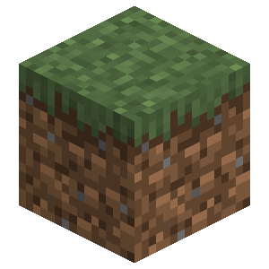
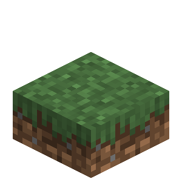
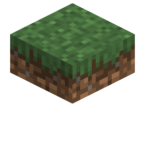

About
The grass slab is a decorative block that can be combined into a single block. These slabs come in three different variants grass, podzol, and mycelium.
Config
Grass slabs are enabled and disabled with the same config option as dirt slabs. Visit the dirt slabs page to read more about it.
Slabbed Support
If the slabbed mod is installed it will allow you to place tall grass and many other plants on these slabs. If however, it's not present the bottom slab variant will not support plants.
Double Slabs
Only two grass slabs of the same type can form a double slab unless a different mod changes this behavior.
Breaking
Breaking a single upper or lower grass slab drops one slab. If however, two grass slabs are put together they act as a whole block and when broken they will drop two slabs instead of one. Unlike grass blocks, grass slabs always drop themselves instead of dirt slabs.
Crafting Recipe



Grass Slab

| Renewable | Yes (Crafting) |
| Stackable | Yes (64) |
| Waterloggable | Yes |
| Tool | Any tool, but the shovel is the quickest! |
| Blast Resistance | 0.6 |
| Hardness | 0.6 |
| Luminous | No |
| Transparent | Double: No, Single: Partial |
| Catches fire from lava | No |